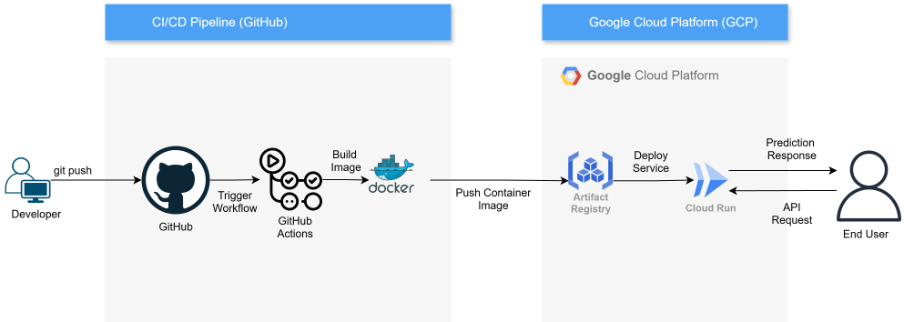
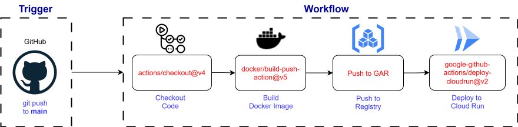

Case Study: Production-Grade ML System for Breast Cancer Classification on GCP
I architected and built this production-ready MLOps system to serve a deep learning model as a scalable, serverless API on Google Cloud. My primary focus was on the cloud engineering and automation required to deliver a reliable, production-grade service, moving far beyond a theoretical model to a real-world application.
Project Overview

As a case study in production-grade machine learning, I architected this end-to-end system with a primary focus on cloud engineering and automation to move beyond a theoretical model to a real-world application. The high-level architecture, shown in the diagram, illustrates the result: a fully automated pipeline where a `git push` triggers the build, containerization, and deployment of the application to Google Cloud Run with zero downtime. This provides a seamless integration of development, deployment, and serving environments, delivering a reliable and scalable service.
Core MLOps & Cloud Architecture
1. Artifact Management: A Real-World Pivot

A cornerstone of any robust MLOps strategy is the effective management of large artifacts like trained models, which cannot be stored directly in Git. My initial, well-architected approach was to use Data Version Control (DVC) to track the model file, with the artifact itself stored remotely in Google Drive. This professional setup decouples the model from the codebase, keeps the repository lightweight, and ensures reproducibility—a perfect solution in theory.
However, during the implementation of the CI/CD pipeline, I encountered a critical, non-obvious failure: the automated deployment jobs were consistently failing with authentication errors when trying to pull the model from Google Drive. After a thorough investigation into the GitHub Actions logs and GCP IAM policies, I diagnosed the root cause: a silent, unannounced security policy update by Google had begun blocking Service Accounts—the non-human users essential for automation—from accessing personal Google Drive storage via the API. This complex cloud integration issue rendered the initial architecture unworkable.
Faced with this production-level roadblock, I pivoted my strategy. Instead of abandoning the principle of artifact versioning, I transitioned to the industry-standard and highly reliable alternative: Git Large File Storage (LFS). This required reconfiguring the repository to track the model file with Git LFS and updating the CI/CD pipeline's checkout step to use the `lfs: true` flag, ensuring the large file was correctly pulled during the automated build. This strategic pivot not only solved the immediate deployment blocker but also aligned the project with common enterprise practices. This experience was a valuable lesson in troubleshooting opaque cloud integration issues and demonstrates my ability to adapt technical strategies to overcome external constraints while maintaining a project's core architectural integrity.
2. CI/CD Automation with GitHub Actions
I engineered a complete CI/CD pipeline using GitHub Actions to eliminate manual deployment and ensure consistency. The workflow is as follows:
- Trigger: The pipeline is automatically initiated by a git push to the main branch.
- Build: It securely checks out the source code, using the LFS flag to pull the full model file. It then builds a Docker image of the FastAPI application.
- Store & Deploy: The workflow authenticates with Google Cloud, pushes the container image to a secure Google Artifact Registry, and then deploys the new version to Google Cloud Run. This serverless architecture ensures the application scales automatically based on demand.

3. Containerization & API Serving
The entire application is a self-contained, portable artifact.
- Docker: I used Docker to containerize the application, packaging the Python environment, dependencies, and the model itself. This guarantees environmental consistency from local development to cloud production.
- FastAPI: I served the model via a high-performance FastAPI endpoint, which provides a clean interface and automatic interactive documentation for the live API.
Delivering a High-Value Model
The value of this MLOps system is defined by the quality of the model it serves. I engineered a classifier that successfully overcame the core challenges of the medical imaging dataset.

Data Integrity and Model Training: I implemented a strict patient-level data split to prevent data leakage and ensure trustworthy performance metrics. To combat a severe class imbalance in the dataset, I used a BinaryFocalCrossentropy loss function and a two-stage fine-tuning strategy for a ResNet50V2 architecture.
Systematic Experimentation: Every training run was tracked with MLflow, allowing me to systematically compare results and select the optimal model for deployment. The result was a highly effective classifier with near-perfect metrics, ensuring the system I built delivers a valuable and reliable prediction service. The final model achieved an AUC of 1.0 and Precision of 1.0 on the held-out test set.
Conclusion and Key Takeaways
This project successfully transitioned a machine learning concept from a local prototype to a fully-realized, production-ready cloud application. It was a comprehensive exercise in MLOps, highlighting the importance of each step—from careful data handling to automated deployment—in building reliable and scalable AI systems. The final result is not just a model that can classify images, but a complete, automated system that can be continuously improved and maintained with confidence.
"The journey from a model in a notebook to a model in production is the essence of MLOps."